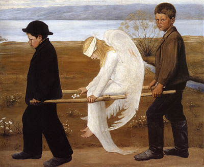
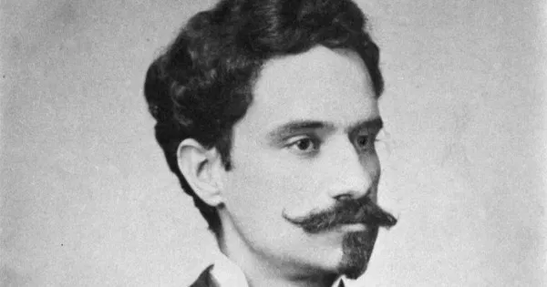

Contexto histórico
O Simbolismo surge no final do século XIX na França, no mesmo período do Parnasianismo. No mesmo período, a segunda revolução industrial só se expandia juntamente do capitalismo e da burguesia, processo esse beneficiado pela unificação da Alemanha em meados de 1870, e logo depois da Itália em 1871. As inovações científicas não pararam, como o uso da energia elétrica e o uso do petróleo para produção de combustíveis.
Nesse contexto começam as disputas entre países pela diversificação dos mercados, por fim culminando na Primeira Guerra Mundial, no período de 1914 a 1918. Diante disso surge o Simbolismo, movimento literário que se opõe ao materialismo, cientificismo e o lado racional que tinham destaque até então, negando a realidade.

Características do Simbolismo
O movimento se opõe ao realismo e o racionalismo, e conta com características como o uso de pausas para representar uma forma de silêncio metafísico, abordagem de temáticas relacionadas à interioridade e ao estado de espírito, o uso de sinestesia, isto é, versos que vão descrever aroma, cor e som, englobando os cinco sentidos.
Podemos citar também a presença de antíteses e oposições, visando tornar vivo o divino, e tornar consciente o que é terreno, estabelecendo relação entre o mundo material e o espiritual, a presença da religiosidade, a construção de imagens sombrias e decadentes, com a presença de luz e sombra ao mesmo tempo. Por fim, o Simbolismo não se preocupa com a métrica tanto quanto o Parnasianismo, permitindo a construção de versos livres e usos de métricas irregulares.
Em suma, podemos citar as características do movimento, resumidamente como:
• Temas voltados à espiritualidade
• Sinestesia
• Presença de antítese e contradições (divino e terreno)
• Religiosidade
• Preferência por sonetos
• Presença de versos livres e brancos
• Oposição ao cientificismo
Autores e obras
Afonso Henrique da Costa Guimarães
Nascido em Ouro Preto, Afonso se formou em direito e trabalhou nos cargos de promotor e juiz, redigindo também um jornal. O autor é referência no simbolismo com suas obras com temática solitária e de morte.

Segue um de seus poemas:
Cisnes brancos, cisnes brancos,
Porque viestes, se era tão tarde?
O sol não beija mais os flancos
Da montanha onde morre a tarde.
Ó cisnes brancos, dolorida
Minh’alma sente dores novas.
Cheguei à terra prometida:’
É um deserto cheio de covas.
Voai para outras risonhas plagas,
Cisnes brancos! Sede felizes...
Deixai-me só com as minhas chagas,
E só com as minhas cicatrizes.
Venham as aves agoireiras,
De risada que esfria os ossos...
Minh’alma, cheia de caveiras,
Está branca de padre-nossos.
Queimando a carne como brasas,
Venham as tentações daninhas,
Que eu lhes porei, bem sob as asas,
A alma cheia de ladainhas.
Ó cisnes brancos, cisnes brancos,
Doce afago de alva plumagem!
Minh’alma morre aos solavancos
Nesta medonha carruagem…